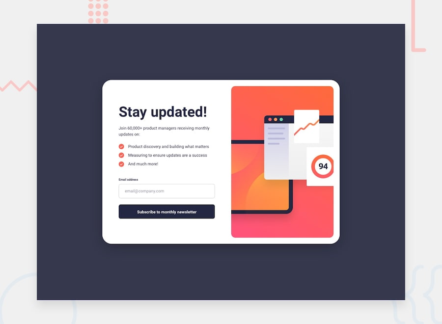
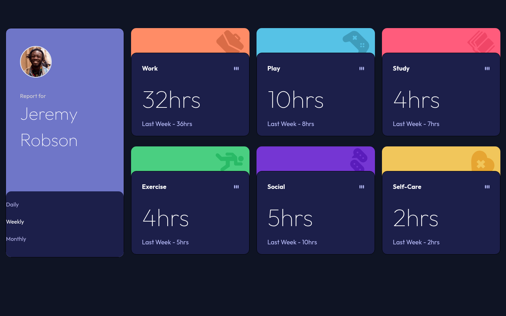
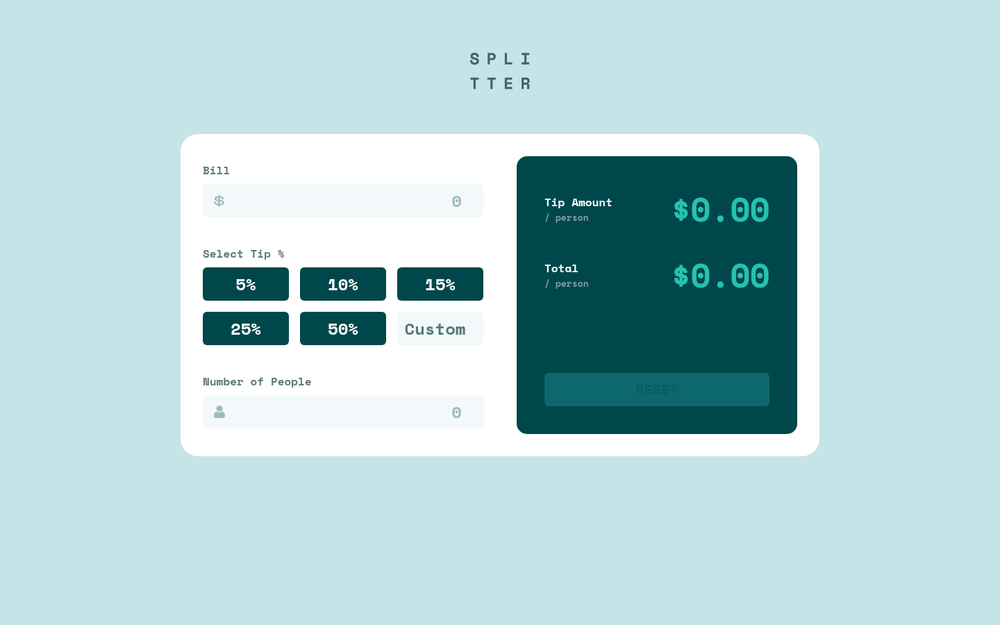
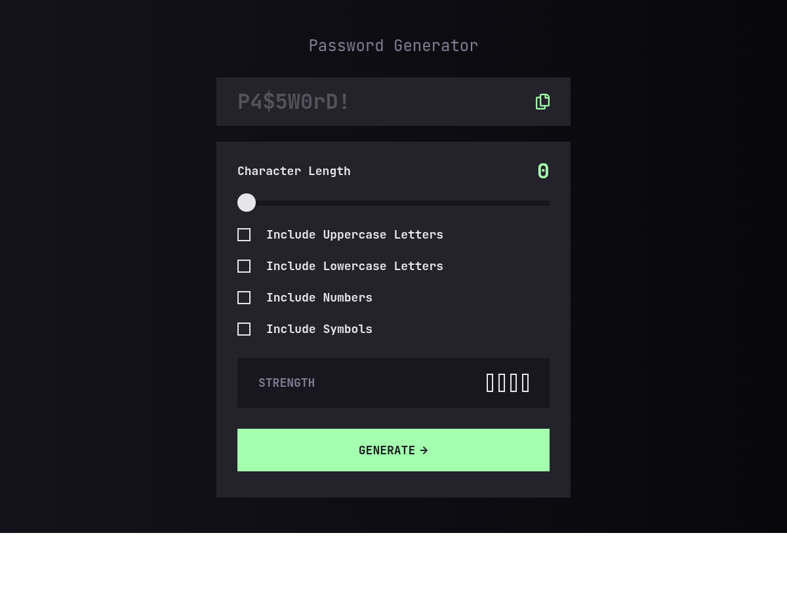
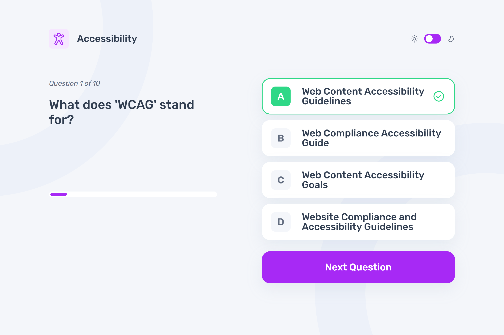
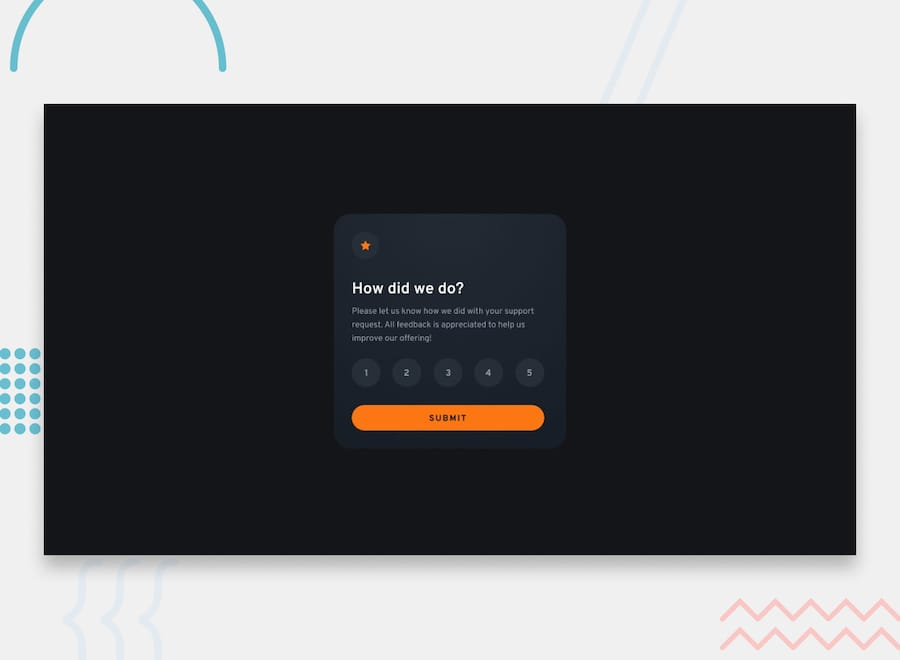
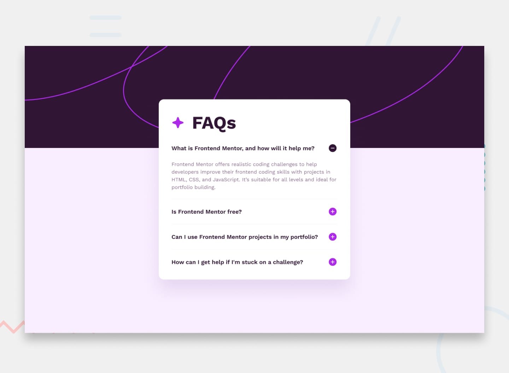
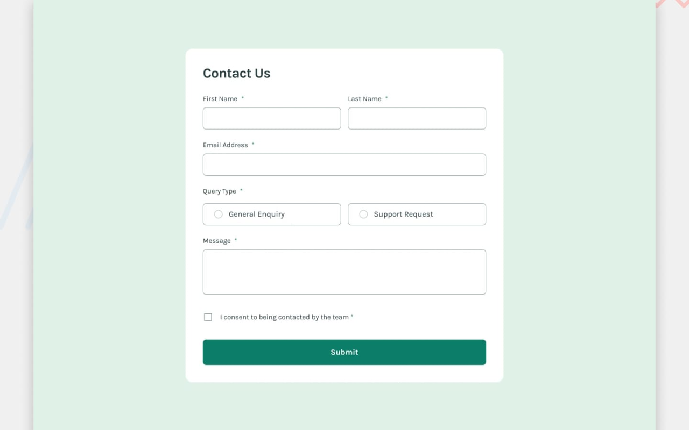
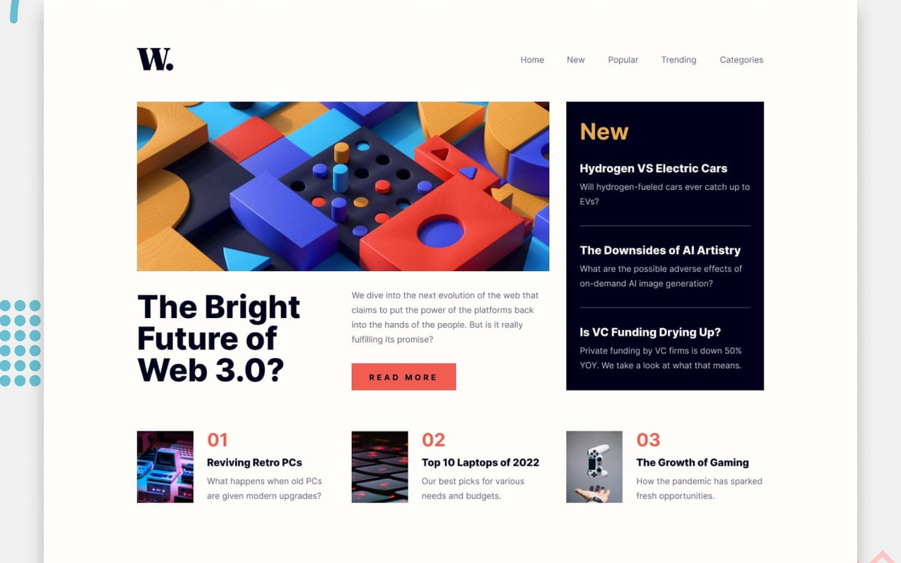

En GitHub Pages la URL base es
.
Cada reto vive en su propia ruta bajo ese origen.
Proyectos
-
Newbie
-
 Newbie
NewbieBlog preview card
/blog-preview-card/ -
 Newbie
NewbieSocial links profile
/social-links-profile/ -
 Newbie
NewbieRecipe page
/recipe-page/ -
 Newbie
NewbieProduct preview card
/product-preview-card-component/ -
 Newbie
NewbieFour card feature section
/four-card-feature-section/ -
 Junior
JuniorTestimonials grid section
/testimonials-grid-section/ -
 Newbie
NewbieMeet landing page
/meet-landing-page/ -
 Newbie
NewbieArticle preview component
/article-preview-component/ -

JuniorNewsletter sign-up form with success message
/newsletter-sign-up-with-success-message/ -

JuniorTime tracking dashboard
/time-dashboard/ -

JuniorTip calculator app
/tip-calculator-app/ -

JuniorPassword generator app
/password-generator-app/ -

JuniorFrontend quiz app
/frontend-quiz-app/ -

NewbieInteractive rating component
/interactive-rating-component/ -

NewbieFAQ accordion
/faq-accordion/ -

JuniorContact form
/contact-form/ -

JuniorNews homepage
/news-homepage/